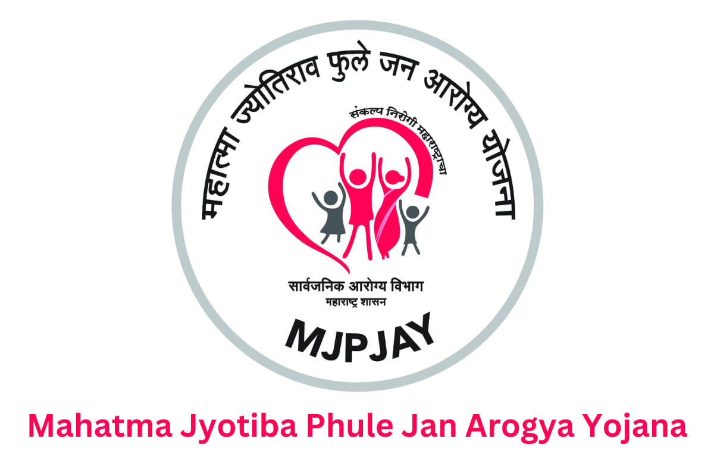

Mahatma Jyotirao Pule Jan Arogya Yojana is the flagship health insurance scheme of the Government of Maharashtra. The scheme provides end-to-end cashless services for identified diseases through a network of service providers from the Government and Private sector.
Benefit
The scheme provides coverage for meeting all expenses relating to the hospitalization of beneficiaries up to ₹ 1,50,000/- per family per policy year. For Renal Transplants, this limit has been enhanced up to ₹ 2,50,000/- per family per policy year.
The benefit is available to every member of the family on a floater basis, i.e., the total coverage of ₹ 1,50,000/- or ₹ 2,50,000/- as the case may be, can be availed by one individual or collectively by all members of the family in the policy year.
Benefit Coverage:This is a package medical insurance scheme to cover hospitalization for Medical and Surgical procedures through cashless treatment concerning the following 34 identified specialties. MJPJAY beneficiary gets a benefit of 996 Medical and Surgical procedures with 121 follow-up procedures. There are 131 government-reserved procedures out of 996 MJPJAY procedures.
Specialized Categories are under follows:-
1.Burns
2.Cardiology
3.Cardiovascular and Thoracic surgery
4.Critical Care
5.Dermatology
6.Endocrinology
7.ENT surgery
8.General Medicine
9.General Surgery
10.Haematology
11.Infectious diseases
12.Interventional Radiology
13.Medical Gastroenterology
14.MEDICAL ONCOLOGY
15.Nephrology
16.Neurology
17.Neurosurgery
18.Obstretrics and Gynecology
19.Ophthalmology
20.Orthopedics
21.Pediatric Surgery
22.Pediatric
23.Cancer
24.Plastic Surgery
25.Polytrauma
26.Prosthesis and Orthosis
27.Pulmonology
28.Radiation Oncology
29.Rheumatology
30.Surgical Gastroenterology
31.Surgical OncologyUrology (Genitourinary Surgery)
32.Mental disorders
33.Oral and Maxillofacial Surgery
34.Neonatal and Pediatric Medical Management
Eligibility
Beneficiaries under Mahatma Jyotirao Phule Jan Arogya Yojana
| Category | Description of Beneficiaries |
|---|---|
| Category A | Families holding Yellow ration card, Antyodaya Anna Yojana ration card (AAY), Annapurna ration card, Orange ration card (annual income up to ₹1,00,000) issued by Civil Supplies Department, Government of Maharashtra for 36 districts of Maharashtra. |
| Category B | White ration card holder farmer families from 14 agriculturally distressed districts of Maharashtra (Aurangabad, Jalna, Beed, Parbhani, Hingoli, Latur, Nanded, Osmanabad, Amravati, Akola, Buldhana, Washim, Yavatmal, and Wardha). |
| Category C |
|